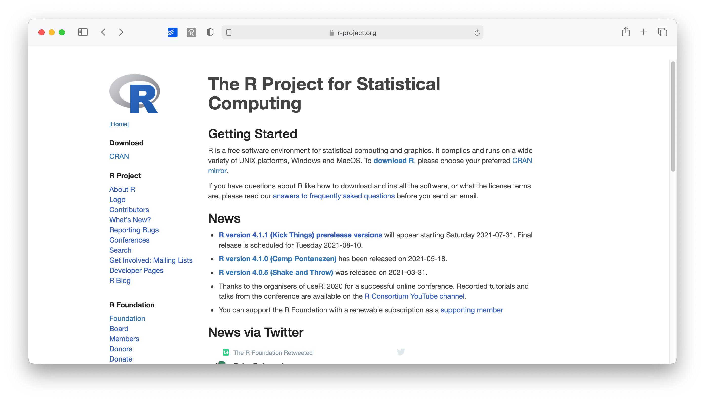
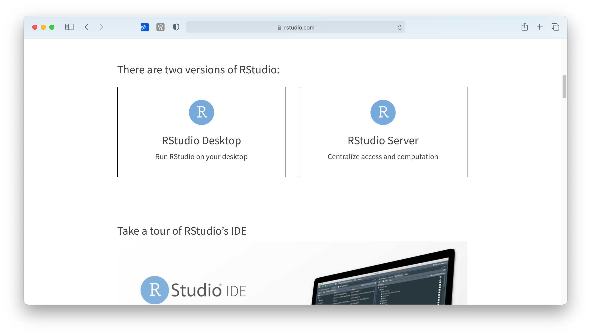
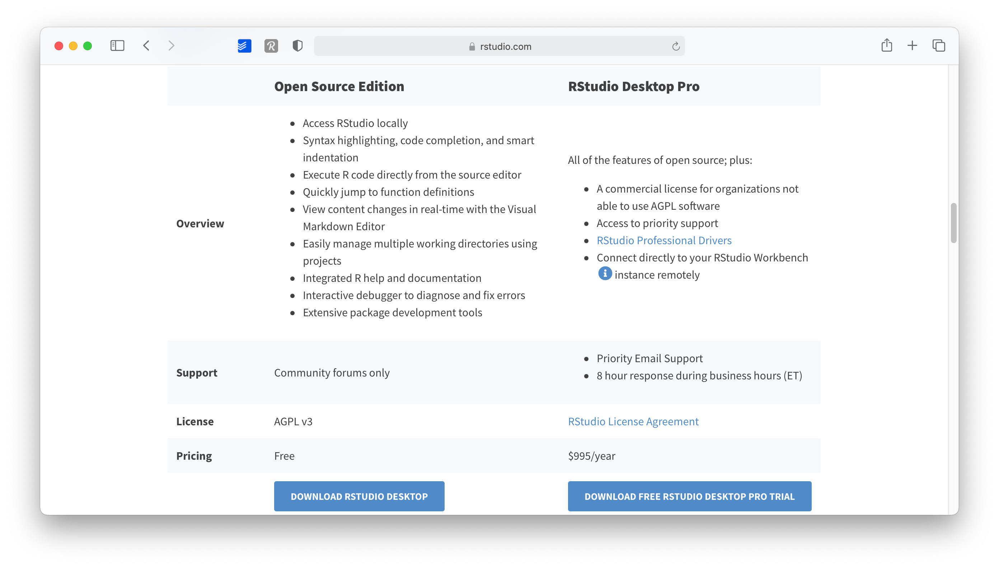
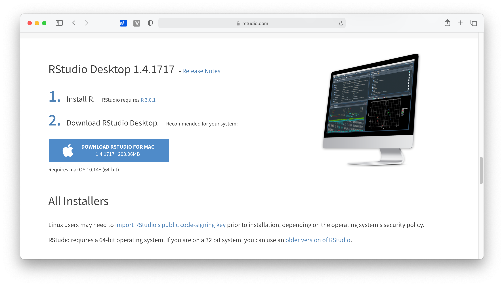
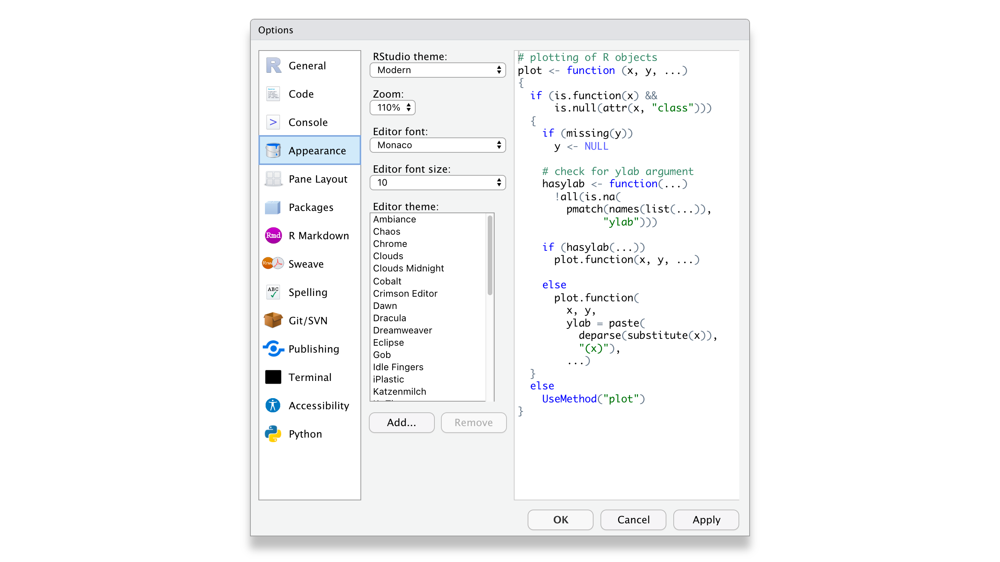

3 Setting up R and RStudio
Every journey starts with gathering the right equipment. This intellectual journey is not much different. The first step that every ’R novice has to face is to set everything up to get started. There are essentially two strategies:
or
- Run RStudio in a browser via RStudio Cloud
While installing R and Studio requires more time and effort, I strongly recommend it, especially if you want to work offline or make good use of your computer’s CPU. However, if you are not sure yet whether you enjoy learning R, you might wish to look at RStudio Cloud first. Either way, you can follow the examples of this book no matter which choice you make.
3.1 Installing R
The core module of our programming is R itself, and since it is an open-source project, it is available for free on Windows, Mac and Linux computers. Here is what you need to do to install it properly on your computer of choice:
Go to www.r-project.org

Click on
CRANwhere it says download.Choose a server in your country (all of them work, but downloads will perform quicker).

Select the operating system for your computer.

Select the version you want to install (I recommend the latest version)

Open the downloaded file and follow the installation instructions. (I recommend leaving the suggested settings as they are).
This was relatively easy. You now have R installed. Technically you can start using R for your research, but there is one more tool I strongly advise installing: RStudio.
3.2 Installing RStudio
R by itself is just the *‘beating heart’* of R programming, but it has no particular user interface. If you want buttons to click and actually ‘see’ what you are doing, there is no better way than RStudio. RStudio is an integrated development environment (IDE) and will be our primary tool to interact with R. It is the only software you need to do all the fun parts and, of course, to follow along with the examples of this book. To install RStudio perform the following steps:
Go to www.rstudio.com.

Go to
Products > RStudio
On this page, scroll down and select
RStudio Desktop
Select the
'Open Source Edition'option by clicking on ’Download RStudio Desktop'
As a last step, scroll down where it shows you a download button for your operating system. The website will automatically detect this. You also get a nice reminder to install ‘R’ first, in case you have not done so yet.

Open the downloaded file and follow the installation instructions (again, keep it to the default settings as much as possible)
Congratulations, you are all set up to learn R. From now on you only need to start RStudio and not R. Of course, if you are the curious, nothing shall stop you to try R without RStudio.
3.3 When you first start RStudio
Before you start programming away, you might want to make some tweaks to your settings right away to have a better experience (in my humble opinion). I recommend at least the following two changes by clicking on RStudio > Preferences or press ⌘/Ctrl + ,.
In the
Code > Editingtab, make sure to have at least the first five options ticked, especially theAuto-indent code after paste. This setting will save time when trying to format your coding appropriately, making it easier to read. Indentation is the primary way of making your code look more readable and less like a series of characters that appear almost random.
In the
Displaytab, you might want to have the first three options selected. In particular,Highlight selected lineis helpful because, in more complicated code, it is helpful to see where your cursor is.
Of course, if you wish to customise your workspace further, you can do so. The visually most impactful way to alter the default appearance of RStudio is to select Appearance and pick a completely different colour theme. Feel free to browse through various options and see what you prefer. There is no right or wrong here.

3.4 Updating R and RStudio: Living at the pulse of innovation
While not strictly something that helps you become a better programmer, this advice might come in handy to avoid turning into a frustrated programmer. When you update your software, you need to update R and RStudio separately from each other. While both R and RStudio work closely with each other, they still constitute separate pieces of software. Thus, it is essential to keep in mind that updating RStudio will not automatically update R. This can become problematic if specific packages you installed via RStudio (like a fancy learning algorithm) might not be compatible with earlier versions of R. Also, additional R packages developed by other people are separate pieces and are updated too, independently from R and RStudio.
I know what you are thinking: This already sounds complicated and cumbersome. However, rest assured, we take a look at how you can easily update all your packages with RStudio. Thus, all you need to remember is: R needs to be updated separately from everything else.
3.5 RStudio Cloud
to be completed